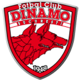
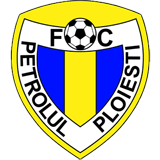
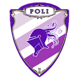

We added here a collection of photos and videos with the supporters of the most important football teams in Romania. Since we are at the begining, the collection is relative small and new content is to be added in the future. I want to mention that there are many more beautiful teams with amazing supporters in Romania and our plan is to mention them here very soon. Enjoy!
  